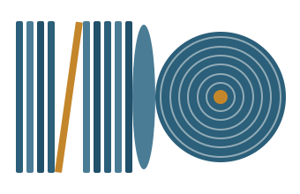

Temporary side-by-side: current (Archivo Narrow + Lora) vs. proposed (Oswald + Playfair Display), at real in-app sizes. This page itself uses Oswald for its own headings so you can feel it live. Nothing here is wired into the app.
Note: small caps are browser-synthesized for both (neither ships true small-cap glyphs). Compare how each scales down.
Recorded over two late-night sessions at Van Gelder's, the date catches the quintet mid-thought — Tyner's voicings opening rooms the horns hadn't noticed were there, Elvin pushing the time until the whole thing tilts forward and refuses to settle.
Tyner's voicings opening rooms the horns hadn't noticed were there.
Recorded over two late-night sessions at Van Gelder's, the date catches the quintet mid-thought — Tyner's voicings opening rooms the horns hadn't noticed were there, Elvin pushing the time until the whole thing tilts forward and refuses to settle.
Tyner's voicings opening rooms the horns hadn't noticed were there.
Watch the body size: Playfair's hairlines thin out in running prose (it's built for headlines); Lora holds up as text. Playfair gets gorgeous at the larger size.

The date catches the quintet mid-thought, refusing to settle.
The date catches the quintet mid-thought, refusing to settle.
Gut check: does Oswald+Playfair read “jazz record” or drift “fashion magazine”? Either can be right — trust your eye.
Oswald for display — strong, era-appropriate; test it at 600, not 700. Playfair — keep it for large serif moments only; for the editorial-note body a text serif (Lora) reads better. A defensible hybrid: Oswald + Lora (impact display, readable notes), reserving Playfair for any future big serif headline.